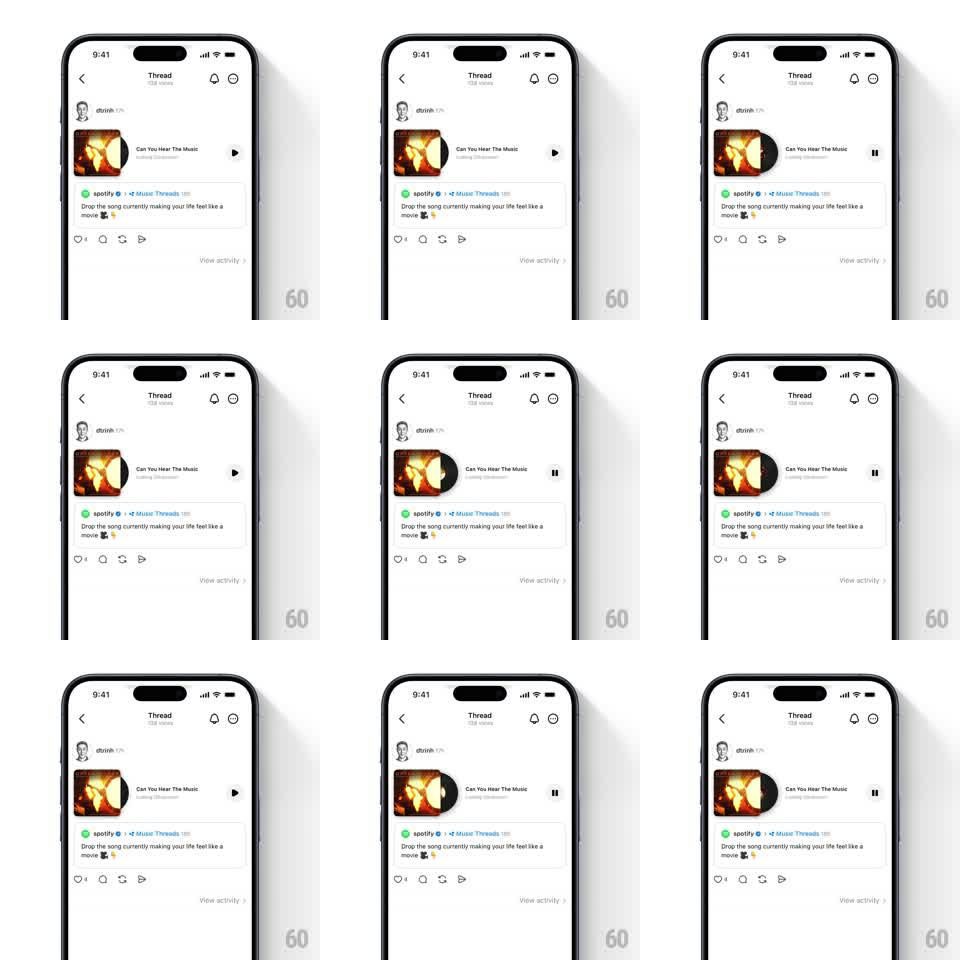

Media
Frame-by-frame

Rebuild this interaction 1:1: Threads' vinyl play - tapping play on a track post slides a vinyl record out from behind the album art, spins it while audio plays, and reels it back on pause.

Rebuild this interaction 1:1: Threads' vinyl play - tapping play on a track post slides a vinyl record out from behind the album art, spins it while audio plays, and reels it back on pause. ## Integration Integration: stack-agnostic spec - springs given as stiffness/damping, timed motions as duration + curve; map every value to your framework and animation library of choice. ## Scene Thread detail: author header, a track card with square album art on the left and title/artist lines right, a circular play button at the card's right edge, then the post text and action row below. ## Motion spec Pattern: vinyl slides from behind the sleeve and spins while playing. - On play: a black vinyl disc slides right out from behind the album art (translate 0 -> ~60% of its width, 350ms, spring ~280/18), overlapping the title area. - Once clear, the vinyl spins continuously (1.8s per revolution, linear); its label and grooves catch a soft moving highlight. - The play icon morphs to pause (150ms crossfade with a 10% scale dip). - On pause: the spin eases to a stop over 400ms and the disc slides back behind the art (300ms, ease-in-out). - The album art never moves - it is the sleeve. ## Calibration - The disc is visibly grooved with a colored center label matching the artwork's palette. - Slide and spin overlap slightly: the disc starts turning as it emerges. ## Reduced motion Disc fades in/out at its out position; no spin. ## Don't miss - The disc stays half-hidden at rest - its right edge peeks from behind the art even before playing. - While playing, a tiny progress shimmer runs along the card's bottom edge.